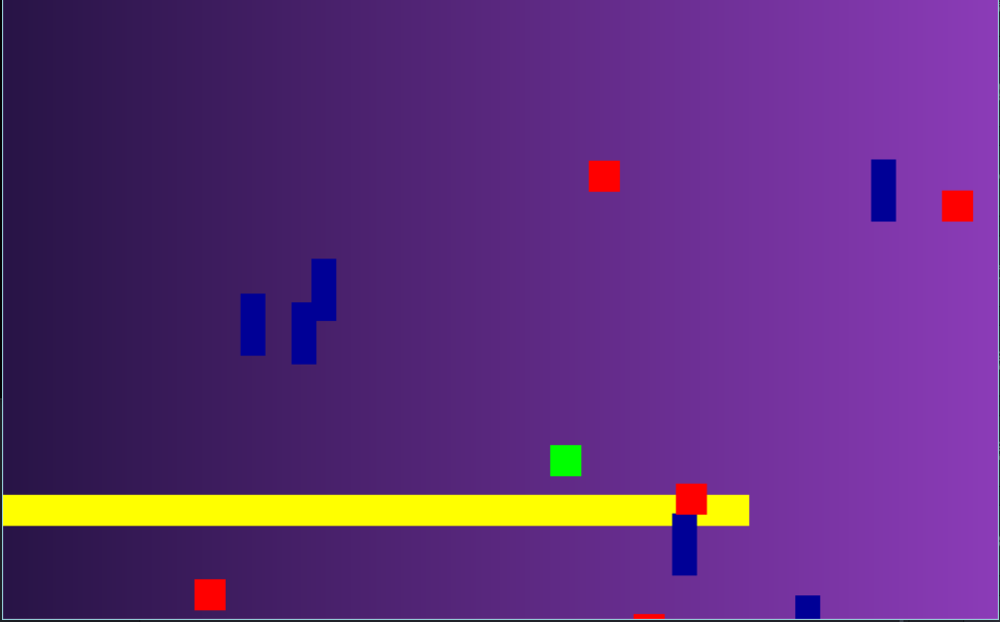
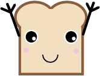

Story of Our Code
Follow our process of getting the game to where it is.
Chapter 1: Getting Started
As soon as we started this project, we knew we wanted to have a game with some sort of interesting input. We played around with the idea of using camera tracking to do this, but thought that using distance sensors could have really cool potential.
Next we needed to decide on the game we would make. We threw around different ideas of games that were popular, but finally decided that a sidescroller could have the most interesting interaction with our input method.
Chapter 1.5: Planning and Plotting
We decided the best way to start was just to make a base game, without the input. We tried to make the game as modular as possible, so when we did add the new controller in we wouldn't run into obstacles.
Chapter 2: The Code Begins
We began by making a simple base game, where you played as a green cube dodging other cubes. The character could move forward and jump, while the rest of the environment stayed in place. While this worked for simple testing, this was not the final product we wanted for the game. We decided the next steps would be to finish the base game how we wanted it to appear.
Chapter 3: Brad is Born
After getting the really basic game working, we added scrolling and random generation of enemies and platforms, but realized we needed a character and a story to make the game interesting. We made random shapes in Illustrator, and accidentally made something that looked like angry butter, which we thought would be a fun enemy. We then realized what better protagonist for our game than Brad the Bread!
